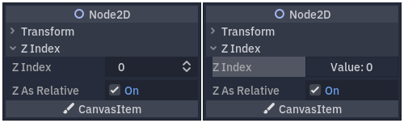

Plugin Inspector
Inspector dock cho phép bạn tạo các widget tùy chỉnh để chỉnh sửa thuộc tính thông qua plugin. Điều này có lợi khi làm việc với các kiểu dữ liệu và resource tùy chỉnh, dù bạn cũng có thể dùng tính năng này để thay đổi widget của inspector cho các kiểu có sẵn. Bạn có thể thiết kế các control tùy chỉnh cho những thuộc tính cụ thể, toàn bộ đối tượng, và thậm chí các control riêng gắn với những kiểu dữ liệu nhất định.
Hướng dẫn này giải thích cách dùng các lớp class_EditorInspectorPlugin và class_EditorProperty để tạo giao diện tùy chỉnh cho số nguyên, thay thế hành vi mặc định bằng một nút tạo giá trị ngẫu nhiên từ 0 đến 99.

Hành vi mặc định ở bên trái và kết quả cuối cùng ở bên phải.
Thiết lập plugin của bạn
Tạo một plugin trống mới để bắt đầu.
Xem thêm
Xem hướng dẫn Tạo plugin để thiết lập plugin mới của bạn.
Giả sử bạn đặt tên thư mục plugin là my_inspector_plugin. Khi đó, bạn sẽ có một thư mục mới addons/my_inspector_plugin chứa hai tệp: plugin.cfg và plugin.gd.
Như trước đây, plugin.gd là một script kế thừa class_EditorPlugin và bạn cần thêm mã mới cho các phương thức _enter_tree và _exit_tree của nó. Để thiết lập plugin inspector, bạn phải tải script của nó, sau đó tạo và thêm instance bằng cách gọi add_inspector_plugin(). Nếu plugin bị vô hiệu hóa, bạn nên gỡ bỏ instance đã thêm bằng cách gọi remove_inspector_plugin().
Ghi chú
Ở đây, bạn đang tải một script chứ không phải một packed scene. Vì vậy bạn nên dùng new() thay vì instantiate().
# plugin.gd
@tool
extends EditorPlugin
var plugin
func _enter_tree():
plugin = preload("res://addons/my_inspector_plugin/my_inspector_plugin.gd").new()
add_inspector_plugin(plugin)
func _exit_tree():
remove_inspector_plugin(plugin)
// Plugin.cs
#if TOOLS
using Godot;
[Tool]
public partial class Plugin : EditorPlugin
{
private MyInspectorPlugin _plugin;
public override void _EnterTree()
{
_plugin = new MyInspectorPlugin();
AddInspectorPlugin(_plugin);
}
public override void _ExitTree()
{
RemoveInspectorPlugin(_plugin);
}
}
#endif
Tương tác với Inspector
Để tương tác với inspector dock, script my_inspector_plugin.gd của bạn phải kế thừa lớp class_EditorInspectorPlugin. Lớp này cung cấp một số phương thức ảo ảnh hưởng đến cách inspector xử lý thuộc tính.
Để có bất kỳ tác dụng nào, script phải hiện thực phương thức _can_handle(). Hàm này được gọi cho mỗi class_Object đang được chỉnh sửa và phải trả về true nếu plugin này nên xử lý đối tượng hoặc các thuộc tính của nó.
Ghi chú
Điều này bao gồm mọi class_Resource gắn với đối tượng.
Bạn có thể hiện thực thêm bốn phương thức khác để thêm control vào inspector ở các vị trí cụ thể. Các phương thức _parse_begin() và _parse_end() chỉ được gọi một lần, lần lượt ở đầu và cuối quá trình phân tích mỗi đối tượng. Chúng có thể thêm control ở trên cùng hoặc dưới cùng của bố cục inspector bằng cách gọi add_custom_control().
Khi trình chỉnh sửa phân tích đối tượng, nó gọi các phương thức _parse_category() và _parse_property(). Tại đó, ngoài add_custom_control(), bạn có thể gọi cả add_property_editor() và add_property_editor_for_multiple_properties(). Hãy dùng hai phương thức sau cùng này để thêm riêng các control dựa trên class_EditorProperty.
# my_inspector_plugin.gd
@tool
extends EditorInspectorPlugin
var RandomIntEditor = preload("res://addons/my_inspector_plugin/random_int_editor.gd")
func _can_handle(object):
# We support all objects in this example.
return true
func _parse_property(object, type, name, hint_type, hint_string, usage_flags, wide):
# We handle properties of type integer.
if type == TYPE_INT:
# Create an instance of the custom property editor and register
# it to a specific property path.
add_property_editor(name, RandomIntEditor.new())
# Inform the editor to remove the default property editor for
# this property type.
return true
else:
return false
// MyInspectorPlugin.cs
#if TOOLS
using Godot;
[Tool]
public partial class MyInspectorPlugin : EditorInspectorPlugin
{
public override bool _CanHandle(GodotObject @object)
{
// We support all objects in this example.
return true;
}
public override bool _ParseProperty(GodotObject @object, Variant.Type type,
string name, PropertyHint hintType, string hintString,
PropertyUsageFlags usageFlags, bool wide)
{
// We handle properties of type integer.
if (type == Variant.Type.Int)
{
// Create an instance of the custom property editor and register
// it to a specific property path.
AddPropertyEditor(name, new RandomIntEditor());
// Inform the editor to remove the default property editor for
// this property type.
return true;
}
return false;
}
}
#endif
Thêm giao diện để chỉnh sửa thuộc tính
Lớp class_EditorProperty là một loại class_Control đặc biệt có thể tương tác với các đối tượng đang được chỉnh sửa trong inspector dock. Nó không hiển thị gì nhưng có thể chứa bất kỳ node control nào khác, kể cả các scene phức tạp.
Script kế thừa class_EditorProperty có ba phần thiết yếu:
Bạn phải định nghĩa phương thức
_init()để thiết lập cấu trúc của các node control.Bạn nên hiện thực
_update_property()để xử lý các thay đổi dữ liệu từ bên ngoài.Tại một thời điểm nào đó, phải phát ra một signal bằng
emit_changedđể báo cho inspector biết control đã thay đổi thuộc tính.
Bạn có thể hiển thị widget tùy chỉnh theo hai cách. Chỉ dùng phương thức add_child() mặc định để hiển thị nó ở bên phải tên thuộc tính, hoặc dùng add_child() kèm theo set_bottom_editor() để đặt nó bên dưới tên.
# random_int_editor.gd
@tool
extends EditorProperty
# The main control for editing the property.
var property_control = Button.new()
# An internal value of the property.
var current_value = 0
# A guard against internal changes when the property is updated.
var updating = false
func _init():
# Add the control as a direct child of EditorProperty node.
add_child(property_control)
# Make sure the control is able to retain the focus.
add_focusable(property_control)
# Setup the initial state and connect to the signal to track changes.
refresh_control_text()
property_control.pressed.connect(_on_button_pressed)
func _on_button_pressed():
# Ignore the signal if the property is currently being updated.
if (updating):
return
# Generate a new random integer between 0 and 99.
current_value = randi() % 100
refresh_control_text()
emit_changed(get_edited_property(), current_value)
func _update_property():
# Read the current value from the property.
var new_value = get_edited_object()[get_edited_property()]
if (new_value == current_value):
return
# Update the control with the new value.
updating = true
current_value = new_value
refresh_control_text()
updating = false
func refresh_control_text():
property_control.text = "Value: " + str(current_value)
// RandomIntEditor.cs
#if TOOLS
using Godot;
[Tool]
public partial class RandomIntEditor : EditorProperty
{
// The main control for editing the property.
private Button _propertyControl = new Button();
// An internal value of the property.
private int _currentValue = 0;
// A guard against internal changes when the property is updated.
private bool _updating = false;
public RandomIntEditor()
{
// Add the control as a direct child of EditorProperty node.
AddChild(_propertyControl);
// Make sure the control is able to retain the focus.
AddFocusable(_propertyControl);
// Setup the initial state and connect to the signal to track changes.
RefreshControlText();
_propertyControl.Pressed += OnButtonPressed;
}
private void OnButtonPressed()
{
// Ignore the signal if the property is currently being updated.
if (_updating)
{
return;
}
// Generate a new random integer between 0 and 99.
_currentValue = (int)GD.Randi() % 100;
RefreshControlText();
EmitChanged(GetEditedProperty(), _currentValue);
}
public override void _UpdateProperty()
{
// Read the current value from the property.
var newValue = (int)GetEditedObject().Get(GetEditedProperty());
if (newValue == _currentValue)
{
return;
}
// Update the control with the new value.
_updating = true;
_currentValue = newValue;
RefreshControlText();
_updating = false;
}
private void RefreshControlText()
{
_propertyControl.Text = $"Value: {_currentValue}";
}
}
#endif
Với mã ví dụ ở trên, bạn có thể tạo một widget tùy chỉnh thay thế control class_SpinBox mặc định cho số nguyên bằng một class_Button tạo giá trị ngẫu nhiên.